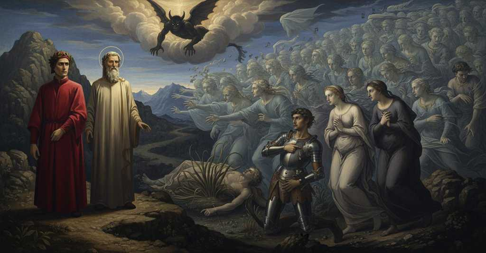

Purgatorio — Canto 5

Riassunto Summary 要約
Nel Purgatorio Canto 5, Dante incontra le anime dei morti per violenza e pentiti all'ultimo istante, che si affollano intorno a lui chiedendo preghiere, e ascolta le storie di Iacopo del Cassero, Bonconte da Montefeltro e Pia de' Tolomei.
In Purgatorio Canto 5, Dante meets the souls of the violently slain who repented at the last moment, who crowd around him asking for prayers, and he listens to the stories of Iacopo del Cassero, Bonconte da Montefeltro, and Pia de' Tolomei.
煉獄篇第5歌で、ダンテは暴力によって死に最後の瞬間に悔い改めた魂たちに出会い、祈りを求めて群がる彼らから、ヤーコポ・デル・カッセロ、ブオンコンテ・ダ・モンテフェルトロ、ピーア・デ・トロメイの物語を聞く。
Segmento 1 1–45
Mentre Dante segue Virgilio, viene notato da una nuova schiera di anime perché il suo corpo proietta un'ombra, rivelando che è vivo. Virgilio lo rimprovera per essersi distratto, esortandolo a restare saldo come una torre e a non badare alle chiacchiere della gente. Intanto, un gruppo di anime che cantava il 'Miserere' si avvicina. Accortesi dell'ombra di Dante, mandano due messaggeri a chiedere informazioni. Virgilio conferma che Dante è in carne e ossa e consiglia loro di onorarlo, perché potrebbe essere loro di giovamento. L'intera folla si precipita allora verso di loro, e Virgilio dice a Dante di continuare a camminare ascoltando le loro preghiere.
While Dante follows Virgil, he is noticed by a new group of souls because his body casts a shadow, revealing that he is alive. Virgil rebukes him for being distracted, urging him to remain firm like a tower and not to heed the people's chatter. Meanwhile, a group of souls singing the 'Miserere' approaches. Noticing Dante's shadow, they send two messengers to ask for information. Virgil confirms that Dante is flesh and blood and advises them to honor him, as it could be to their benefit. The entire crowd then rushes towards them, and Virgil tells Dante to keep walking while listening to their pleas.
ダンテがウェルギリウスに従って進むと、その体に影があることから生きていることを見抜かれ、新たな魂の一団に気づかれる。ウェルギリウスは、彼が気を取られていることを叱責し、塔のように堅固に立ち、人々の囁きに耳を貸さないよう促す。その間、『ミゼレーレ』を歌う魂の一団が近づいてくる。彼らはダンテの影に気づくと、様子を尋ねるために二人の使者を送る。ウェルギリウスはダンテが生身の人間であることを認め、彼に敬意を払うよう助言する。それが彼らのためになるかもしれないからだ。すると、群衆全体が彼らに殺到し、ウェルギリウスはダンテに、彼らの祈願を聞きながら歩き続けるように告げる。
Segmento 2 46–84
Le anime dei morti per violenza, pentitesi all'ultimo momento, gridano a Dante di fermarsi. Gli chiedono di guardare se ne riconosce qualcuno per portare sue notizie nel mondo e gli spiegano di essere morti in pace con Dio grazie al pentimento finale. Dante risponde di non riconoscere nessuno, ma offre il suo aiuto per qualsiasi cosa possa fare. Allora uno spirito, Iacopo del Cassero, si fa avanti e, confidando nella sua promessa, gli chiede di far pregare per lui a Fano. Racconta poi di essere stato assassinato per ordine di Azzo VIII d'Este vicino a Padova, in un luogo dove si credeva sicuro, descrivendo la sua fuga in una palude dove, impigliatosi, cadde e morì dissanguato.
The souls of those who died violently, having repented at the last moment, shout to Dante to stop. They ask him to see if he recognizes anyone in order to bring news of them to the world, and explain that they died at peace with God thanks to their final repentance. Dante replies that he recognizes no one, but offers his help for anything he can do. Then one spirit, Iacopo del Cassero, steps forward and, trusting in his promise, asks him to have prayers said for him in Fano. He then recounts being murdered by order of Azzo VIII of Este near Padua, in a place where he believed himself safe, describing his flight into a marsh where, becoming entangled, he fell and bled to death.
暴力によって死んだが最後の瞬間に悔い改めた魂たちが、立ち止まるようダンテに叫ぶ。彼らは、誰か見覚えのある者がいないか見て、その知らせを現世に伝えてほしいと頼み、最後の悔い改めによって神と和解して死んだのだと説明する。ダンテは誰も見分けられないと答えるが、自分にできることなら何でも手伝うと申し出る。すると、一人の霊、ヤーコポ・デル・カッセロが進み出て、ダンテの約束を信じ、ファーノで自分のために祈ってもらうよう頼む。そして彼は、安全だと思っていた場所、パドヴァの近くでエステ家のアッツォ8世の命によって殺害されたことを語り、沼地へ逃げ込み、そこで絡まって倒れ、失血死した最期を語る。
Segmento 3 85–129
Un altro spirito, Bonconte da Montefeltro, si presenta e chiede a Dante di intercedere per lui, poiché sua moglie Giovanna non prega per la sua anima. Dante gli chiede come mai il suo corpo non fu mai ritrovato dopo la battaglia di Campaldino. Bonconte racconta di essere fuggito ferito a morte e di essere spirato invocando il nome di Maria. La sua anima fu salvata da un angelo grazie a una sola lacrima di pentimento, scatenando l'ira di un demone che, per vendetta, si scagliò sul suo corpo. Il demone scatenò una tempesta che fece ingrossare il fiume Archiano, il quale trascinò il suo cadavere nell'Arno, dove fu sommerso e sepolto dal fango, impedendone il ritrovamento.
Another spirit, Bonconte da Montefeltro, introduces himself and asks Dante to intercede for him, since his wife Giovanna does not pray for his soul. Dante asks him why his body was never found after the Battle of Campaldino. Bonconte recounts fleeing while mortally wounded and dying while invoking the name of Mary. His soul was saved by an angel thanks to a single tear of repentance, unleashing the wrath of a demon who, in revenge, took it out on his body. The demon unleashed a storm that caused the Archiano river to swell, which dragged his corpse into the Arno, where it was submerged and buried by mud, preventing its discovery.
別の魂、ブオンコンテ・ダ・モンテフェルトロが自己紹介し、妻のジョヴァンナが自分の魂のために祈ってくれないので、ダンテに執り成しを頼む。ダンテは、なぜカンパルディーノの戦いの後、彼の遺体が見つからなかったのかと尋ねる。ブオンコンテは、致命傷を負って逃げ、マリアの名を呼びながら息を引き取ったと語る。彼の魂はたった一粒の悔い改めの涙によって天使に救われたが、それが悪魔の怒りを買い、悪魔は復讐として彼の肉体に襲いかかった。悪魔は嵐を呼び起こしてアルキアーノ川を増水させ、川は彼の亡骸をアルノ川へと運び、そこで遺体は泥に沈められ埋められたため、発見されることはなかった。
Segmento 4 130–136
Un terzo spirito, la Pia, chiede a Dante di ricordarla quando sarà tornato nel mondo e si sarà riposato. Riassume la sua vita e la sua morte nella celebre frase 'Siena mi fé, disfecemi Maremma', e conclude alludendo che la verità sulla sua fine è nota a suo marito, colui che l'aveva sposata donandole l'anello nuziale.
A third spirit, Pia, asks Dante to remember her when he has returned to the world and has rested. She summarizes her life and death in the famous phrase 'Siena made me, Maremma unmade me', and concludes by alluding that the truth of her end is known to her husband, the one who married her by giving her the wedding ring.
第三の魂であるピーアが、ダンテに、現世に戻って休息した折には自分のことを思い出してくれるよう頼む。彼女は自らの生と死を「シエナは私を作り、マレンマは私を滅ぼした」という有名な言葉で要約し、自分の死の真相は、婚礼の指輪を贈って彼女を娶った夫が知っているとほのめかして締めくくる。